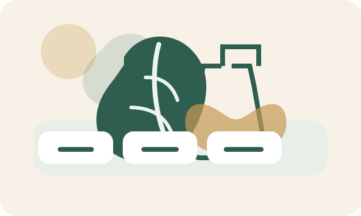

Tối ưu hóa chiết xuất dược liệu kết hợp AI
Khảo sát dung môi, nhiệt độ, thời gian, tỷ lệ nguyên liệu/dung môi và kỹ thuật chiết; sau đó dùng mô hình thống kê hoặc học máy để tìm vùng điều kiện tối ưu.
- Tối ưu hiệu suất chiết và hàm lượng hoạt chất
- Dự đoán điều kiện chiết phù hợp
- Kết nối kết quả chiết với hoạt tính sinh học